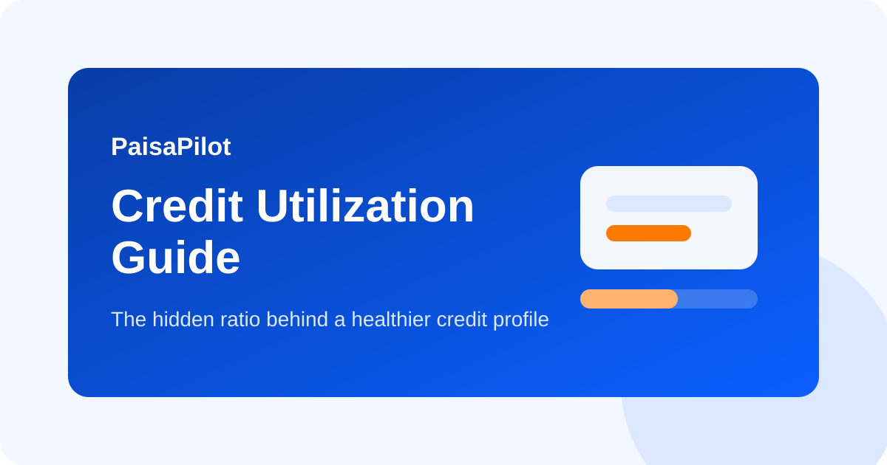

Credit Utilization Explained: The Hidden Habit Behind Better Credit Score
Last updated: March 14, 2026

Many people pay their credit card bill on time but still wonder why their score does not improve much. One reason is credit utilization. This is the percentage of your available credit limit that you are using. It is not the only factor in your score, but it is one of the most visible signals of short-term credit behavior.
Quick Answer
Try to keep total card usage low relative to total limit. A practical working range is below 30%, and lower is often better if it happens naturally. The goal is not zero usage. The goal is controlled usage.
What Credit Utilization Means
If your card limit is Rs 1,00,000 and your outstanding amount reported is Rs 35,000, your utilization is 35%.
| Total limit | Outstanding | Utilization |
|---|---|---|
| Rs 50,000 | Rs 10,000 | 20% |
| Rs 1,00,000 | Rs 35,000 | 35% |
| Rs 2,00,000 | Rs 1,20,000 | 60% |
Higher usage can signal stress, even when you pay the bill later. Credit bureaus and lenders look at how much of your limit is being used, not just whether you eventually paid.
Why It Matters
- It affects score trends, especially in revolving credit behavior.
- High usage can make a borrower look stretched.
- It influences lender comfort during loan applications.
- It can rise quietly if you put large spends on one card near report date.
Single Card vs Total Utilization
Both matter in practice. Suppose you have two cards of Rs 1,00,000 each. If one card is used up to Rs 90,000 and the other is almost empty, total utilization may still look moderate, but one card is under visible pressure. Keeping usage balanced helps.
How to Keep Utilization Healthy
- Know the billing cycle: spending near bill generation can show as high reported usage.
- Prepay once or twice: if a large expense pushes usage high, make an early payment before the statement is generated.
- Distribute spending: use multiple cards sensibly instead of loading everything on one card.
- Avoid limit exhaustion: using 80% to 100% repeatedly is a weak signal, even if temporary.
- Do not close old useful cards casually: closing a card reduces total available limit and can worsen utilization.
Common Mistakes
- Thinking full bill payment automatically removes utilization impact for that month.
- Using one card heavily for reward points and ignoring the reported balance effect.
- Applying for multiple new cards when utilization is already high.
- Closing an old no-fee card that was helping your total limit base.
Should You Increase Card Limit?
If your spending is stable and repayment is disciplined, a higher limit can improve utilization ratio. But this only helps if your actual spending behavior stays controlled. A higher limit is not a license to spend more.
Before a Loan Application
If you plan to apply for a home loan, car loan, or personal loan in the next two to three months, keep card utilization especially clean. Reduce large outstanding balances early and avoid sudden high card usage close to the application date.
FAQ
Is 0% utilization best?
Not necessarily. Regular low usage with on-time payment often shows more normal behavior than never using the card.
What is a safe target?
Below 30% is a practical rule, with lower being better when convenient.
Does debit card spending help credit score?
No. Credit score behavior mostly depends on credit products, not debit card use.
Related Guides
Credit Score Improvement, Credit Card Basics, Loan EMI Planning
Editorial Note: Educational information only; not lending or bureau advice.